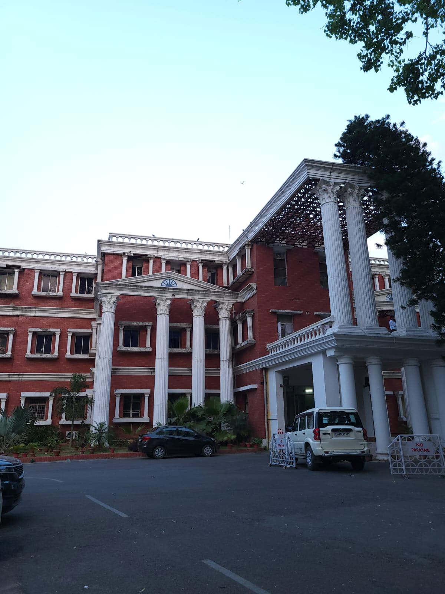
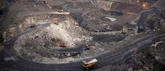

CENTRAL COALFIELDS LIMITED - THE HISTORICAL MARCH
Central Coalfields Limited is a Category-I Mini-Ratna Company since October 2007. During 2009-10, coal production of the company reached its highest-ever figure of 47.08 million tonnes, with net worth amounting to Rs.2644 crore against a paid-up capital of Rs.940 crore.
Formed on 1st November 1975, CCL (formerly National Coal Development Corporation Ltd) was one of the five subsidiaries of Coal India Ltd. which was the first holding company for coal in the country (CIL now has 8 subsidiaries).

Pioneering Role of NCDC
CCL had a proud past. As NCDC, it heralded the beginning of nationalization of coal mines in India.
National Coal Development Corporation Ltd. (NCDC) was set up in October, 1956 as Government-owned Company in pursuance of the Industrial Policy Resolutions of 1948 and 1956 of the Government of India. It was started with a nucleus of 11 old state collieries having a total annual production of 2.9 million tonnes of coal. From its very beginning, NCDC addressed itself to the task of increasing coal production and developing new coal resources in the outlying areas, besides introducing modern and scientific techniques of coal mining.
NCDC played a pioneering role in India's coal industry by introducing large-scale mechanization and modern and scientific methods of coal mining for promoting conservation of high grades of coal and exploiting deep coking coal seams necessitating heavy capital investment and sophisticated technical skill. NCDC's role can be truly assessed by its contribution towards growth of new coal resources in the outlying areas.
NATIONALIZATION OF COAL MINES
A major event in the history of Indian coal industry during the Fourth Plan Period (1969-74) was the nationalisation of the erstwhile privately owned coal mines in two phases.
In the first phase, the management of coking coal mines was taken over by the Government of India on 17th Oct. 1971 and nationalization was effective from 5th January 1972. A state-owned company, Bharat Coking Coal Ltd. was formed for managing coking coal mines.
In the second phase of nationalisation, the management of non-coking coal mines in the country was taken over by the Government on 31st January 1973. These mines were subsequently nationalized with effect from 1st May 1973 and another state-owned company, Coal Mines Authority Ltd. (CMAL) came into being with headquarters at Calcutta.
- As a result, NCDC units located in the States of Maharashtra and Madhya Pradesh became a part of the Western Division.
- The Central Division consisted of all the old collieries of NCDC in Orissa and Bihar and those acquired by CMAL after take-over in Giridih, East Bokaro, West Bokaro, South Karanpura, North Karanpura, Hutar & Daltonganj Coalfields in Bihar.

FORMATION OF CCL
The CMAL, with its three divisions continued upto 1st November 1975 when it was renamed as Coal India Limited (CIL) following the decision of Govt. of India to restructure the coal industry.
The Central Division of CMAL came to be known as Central Coalfields Limited and became a separate company with the status of a subsidiary of CIL, which became the holding company.